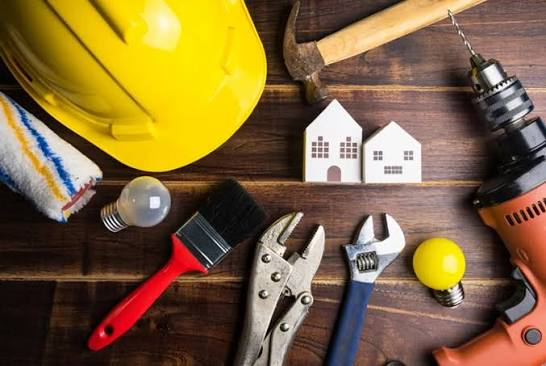

A well-constructed building can last for generations, but only if it is maintained properly. Regular maintenance helps identify small issues before they become major problems, ensuring safety, comfort, and long-term value.
Schedule routine inspections to check walls, roofs, foundations, and structural elements. Early detection of cracks, leaks, or damage can prevent expensive repairs later.
Water leakage is one of the biggest threats to any structure. Ensure waterproofing systems, roof drainage, and exterior walls remain in good condition throughout the year.
Inspect wiring, switchboards, and electrical panels regularly. Replacing damaged cables and faulty components improves safety and prevents electrical hazards.
Repair leaking pipes, clean drainage systems, and inspect water tanks periodically. Proper plumbing maintenance reduces water wastage and protects the building structure.
Exterior paint protects buildings from sunlight, moisture, and harsh weather. Repainting every few years improves appearance and extends the life of exterior walls.
Lubricate hinges, repair damaged locks, and seal gaps to improve security, energy efficiency, and smooth operation.
Clean flooring regularly, repair broken tiles, and maintain wooden finishes to preserve the beauty and functionality of your interiors.
If you notice significant cracks, uneven floors, or foundation settlement, consult experienced structural engineers immediately for professional evaluation.
A planned maintenance schedule covering electrical, plumbing, painting, waterproofing, and structural inspections helps reduce long-term repair costs.
Professional maintenance teams have the expertise, equipment, and experience to keep your property in excellent condition while ensuring safety and long-term durability.
Building maintenance is an investment, not an expense. Regular care preserves your property's value, improves safety, and extends its lifespan. At Chola Construction, we provide reliable maintenance solutions that keep your buildings strong, attractive, and functional for years to come.
Request Maintenance Service